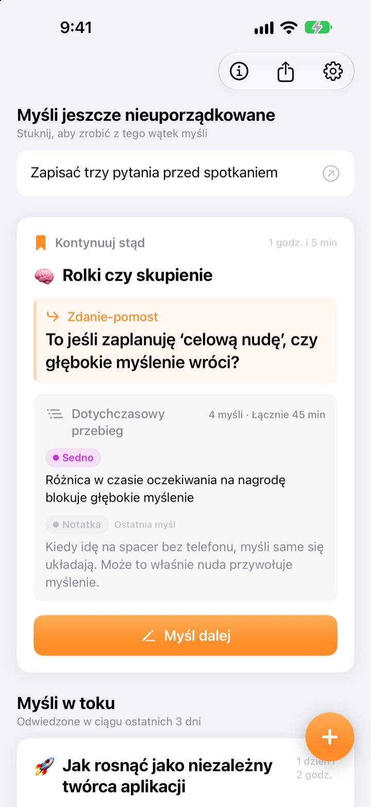
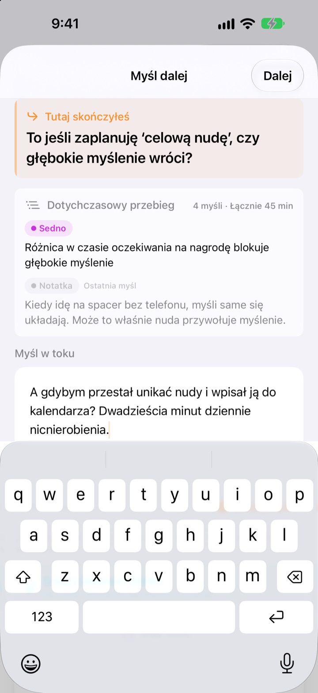
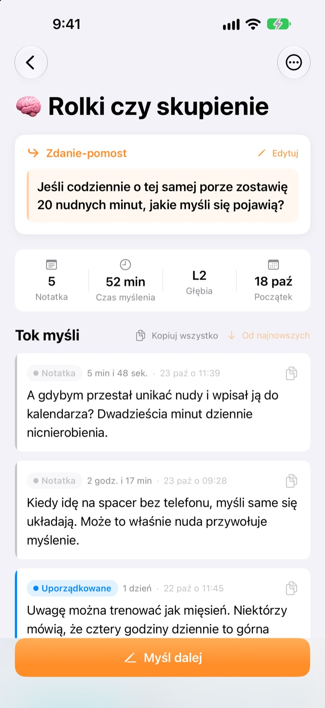
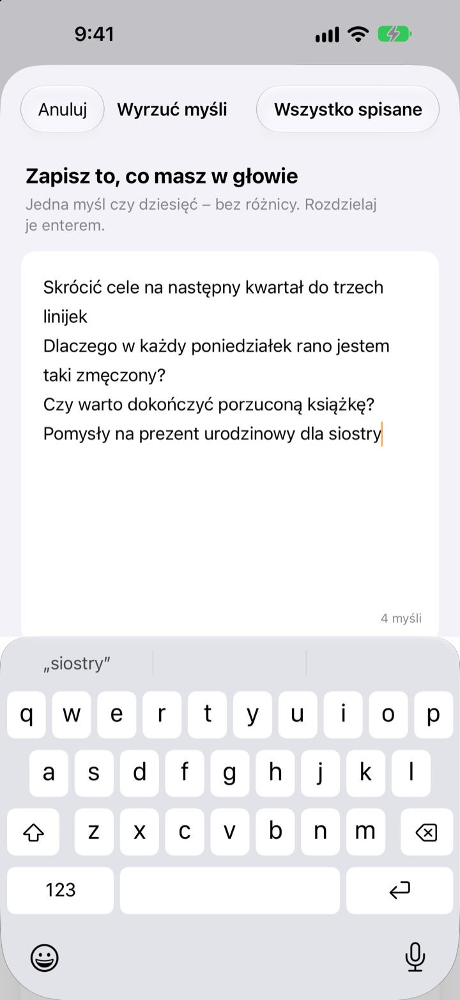

Wczorajsza niedokończona myśl
dziś rusza dalej od tego samego miejsca
Kiedy przestajesz myśleć, zostaw jedną linijkę, od której podejmiesz wątek. Gdy znów otworzysz aplikację, będzie czekać na samej górze.
Wszystkie funkcje są bezpłatne. Bez konta, wszystko zostaje na Twoim urządzeniu.

Spróbuj zostawić zdanie-pomost
Zapisz myśl i zostaw zdanie, od którego zaczniesz następnym razem. Kroki są takie same jak w aplikacji.
Na czym ja właściwie skończyłem?
Otwierasz notatkę sprzed tygodnia i znajdujesz kilka wniosków, ale nie pytanie, którym chciałeś się zająć dalej. Więc zaczynasz od zera. ThinkFlow każe Ci zapisać to kolejne pytanie, gdy przerywasz, więc po powrocie zaczynasz prosto od niego.
Zdanie-pomost czeka na górze
Zakończ myślenie jedną linijką: pytaniem, od którego podejmiesz wątek. Po powrocie to zdanie, dotychczasowe sedno i ostatnia myśl są na jednej karcie. Nie musisz niczego odtwarzać.
Zobaczysz je też w widżecie na ekranie głównym, a gdy myślisz, czas płynie na ekranie blokady i w Dynamic Island.

Od notatki do sedna
Przeprowadzaj każdą myśl przez cztery poziomy: notatka, uporządkowane, sedno i podsumowanie. Jednym rzutem oka widzisz, jak bardzo dojrzała.
To, czego szukałeś lub o co pytałeś, dołączasz jako materiał, oddzielnie od własnych myśli.

Najpierw opróżnij głowę
Zapisz wszystko, co chodzi Ci po głowie, po jednym wierszu na myśl, i wybierz tę, nad którą chcesz pracować teraz. Stanie się wątkiem, a reszta poczeka na ekranie startowym, aż ją stukniesz.
Myśli, których nie ruszałeś dłużej niż trzy dni, trafiają do sekcji Myśli do wskrzeszenia.

Zacznij w trzech krokach
- 1
Wyrzuć myśli
Jeden wiersz na myśl, potem wybierz tę, którą warto rozwijać.
- 2
Myśl dalej
Dodawaj każdy nowy pomysł osobno, łatwiej go potem dopracować.
- 3
Zostaw zdanie i zamknij
Następnym razem zaczniesz właśnie od niego.
Poziom dopracowania
- Notatka
- Surowa myśl
- Uporządkowane
- Raz uporządkowane
- Sedno
- Tylko sedno
- Podsumowanie
- Końcowe podsumowanie
Stuknij etykietę poziomu obok myśli, aby go zmienić. Sedno i podsumowania pojawiają się na karcie jako pierwsze, gdy wracasz.
Zdanie-pomost czeka na górze
Czy muszę pisać zdanie-pomost?
Jeśli coś dodałeś, tak: ekran Myśl dalej zamknie się dopiero, gdy zostawisz kolejną linijkę. Jeśli nic nie napisałeś, po prostu go zamknij. Sztuka polega na tym, by przerwać, póki masz jeszcze coś do powiedzenia, a nie dopiero wtedy, gdy utkniesz.
Czym są Myśli do wskrzeszenia?
Wątki, których nie otwierałeś dłużej niż trzy dni, są zbierane osobno na ekranie startowym, więc nawet prawie zapomniana myśl może ruszyć dalej od swojego zdania-pomostu.
Jak zgłosić błąd lub coś zaproponować?
Użyj opcji Wyślij opinię w ustawieniach aplikacji, napisz na adres poniżej albo otwórz issue na github.com/M1zz/ThinkFlow/issues. Każda wiadomość jest mile widziana.
Czy naprawdę wszystko jest za darmo?
Tak. Wszystkie funkcje są bezpłatne, bez reklam i bez konta. „Wesprzyj twórcę” w ustawieniach jest całkowicie dobrowolne i niczego nie odblokowuje.
Pytania lub sugestie? Napisz na leeo@kakao.com.